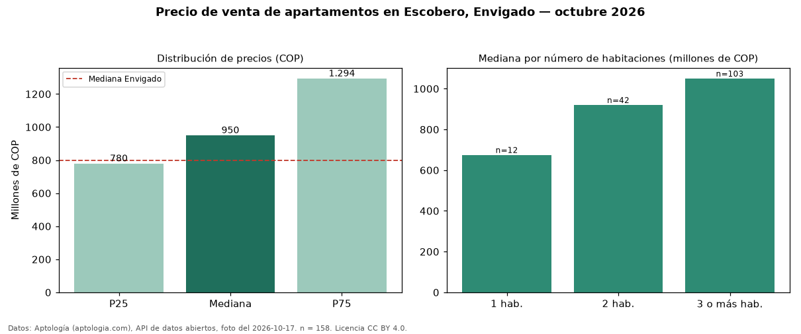

Precio de venta de apartamentos en Escobero, Envigado — octubre 2026
COP 950 millones es el precio mediano de apartamentos en venta en Escobero, Envigado (n = 158 avisos). Frente al total de Envigado (COP 800 millones), el barrio está 19 % por encima. Con la mediana de arriendo del mismo barrio (COP 4.500.000 al mes), el arriendo anual equivale a 5,7 % del precio de venta: una aproximación gruesa a la rentabilidad bruta, porque compara medianas de ofertas distintas. El segmento con más oferta es el de 3 o más habitaciones (103 avisos, mediana COP 1,05 mil millones); pasar de 1 habitación a 3 o más habitaciones sube la mediana 56 %. 99 % de los avisos incluye parqueadero. Por mediana, es el puesto 13 de 43 barrios de Envigado con al menos 30 avisos de apartamentos en venta: en la franja media. La dispersión es moderada: el cuartil superior (COP 1,29 mil millones) es 1,7 veces el inferior (COP 780 millones). Datos: Aptología (aptologia.com), API de datos abiertos, licencia CC BY 4.0 — https://www.aptologia.com/venta/envigado/escobero. Archivos: PDF de 2 páginas, CSV con las cifras y gráfica PNG.

| Avisos únicos | 158 |
|---|---|
| Percentil 25 | COP 779.702.250 |
| Mediana | COP 950.000.000 |
| Percentil 75 | COP 1.293.750.000 |
Fuente: avisos vigentes de portales inmobiliarios recopilados por Aptología, deduplicados (mínimo 30 avisos únicos por celda). Precios pedidos, no cerrados. Fecha: 2026-10-18.